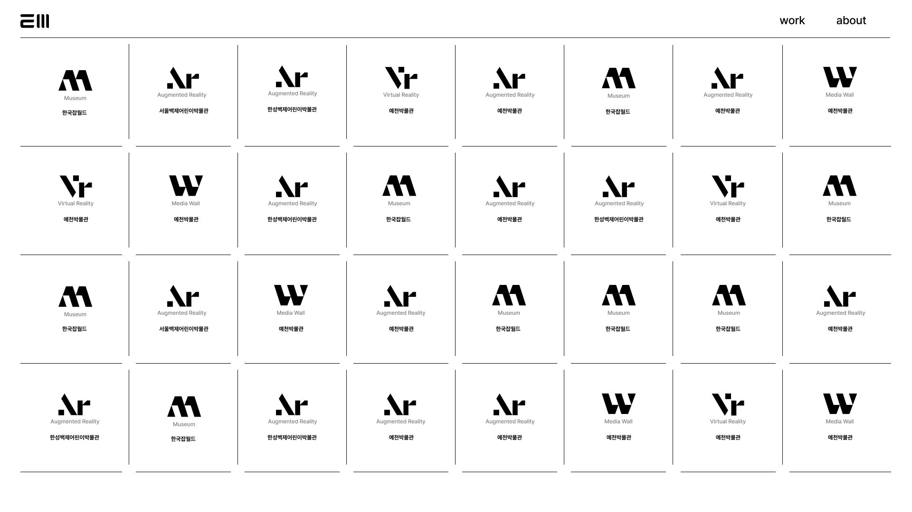
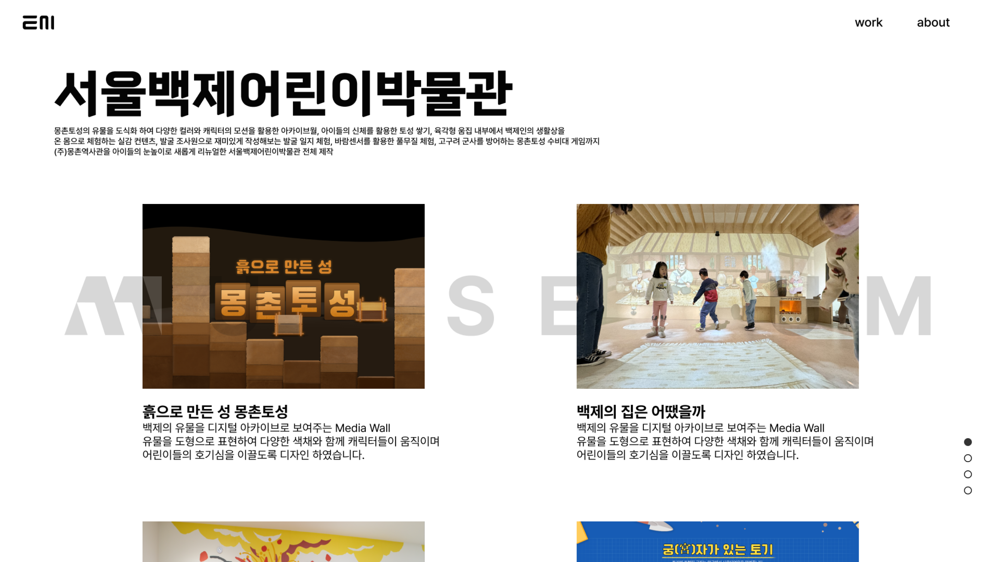
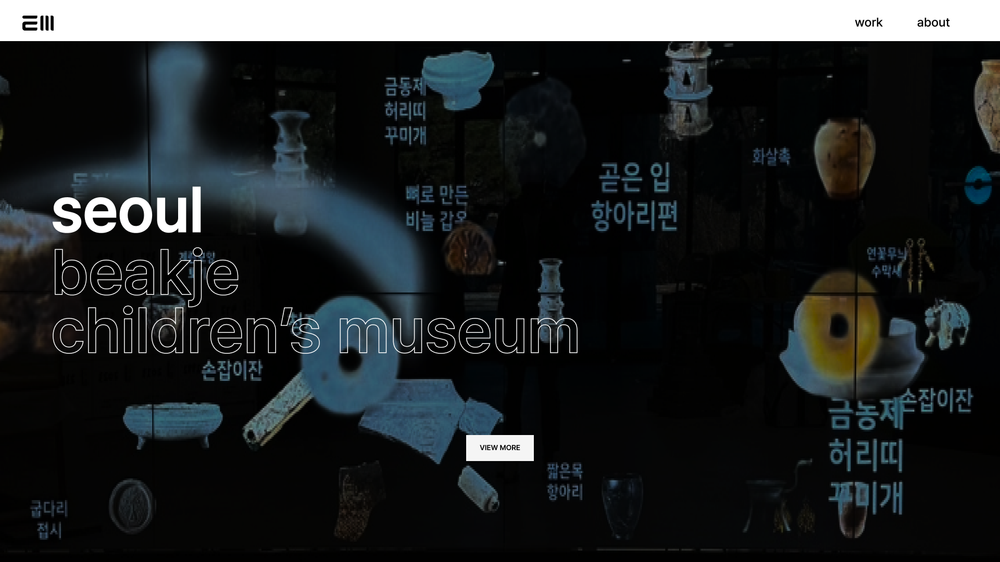
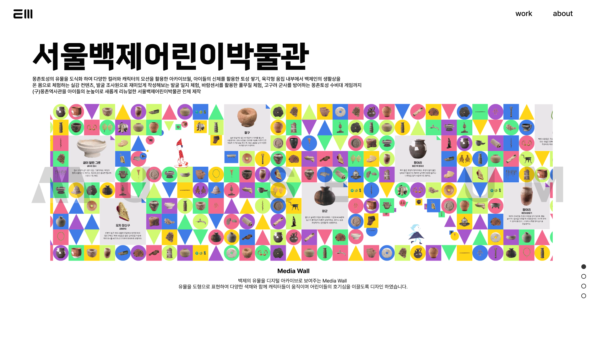

enough media
website
다양한 프로젝트를 직관적으로 탐색할 수 있도록 정보 구조와 비주얼 시스템을 재구성한 이너프미디어 웹사이트 리뉴얼 프로젝트입니다.

프로젝트를
경험처럼 전달하다.
이너프미디어는 20년 넘게 박물관, AR·VR, 인터랙티브 전시, UI/UX 등 다양한 영역의 프로젝트를 수행해온 콘텐츠 기업입니다. 다만 기존 웹사이트에서는 이 방대한 작업물이 하나의 목록으로만 나열되어 있어, 회사가 다뤄온 전문 영역과 스케일을 한눈에 파악하기 어려웠습니다. 각 프로젝트의 카테고리를 하나의 아이콘으로 시각화하고, 이를 다시 하나의 아트웍으로 묶어 첫 화면에서부터 이너프미디어의 작업 범위를 직관적으로 전달하도록 설계했습니다.
콘텐츠 중심의 정보 구조
다양한 체험형 프로젝트를 효과적으로 분류하고 전달할 수 있도록 콘텐츠 중심으로 정보 구조를 재구성했습니다.
시각적 카테고리 시스템
전시, 인터랙션, 앱, 교육 등 각 사업 영역을 아이콘 시스템으로 시각화해 프로젝트의 성격을 빠르게 파악할 수 있도록 설계했습니다.

브랜드와 실용성의 균형
여백 중심의 화면 구성과 간결한 UI를 통해 이너프미디어의 전문성과 확장성을 동시에 표현했습니다.

몰입감 있는 인터랙션
풀스크린 비주얼과 부드러운 전환 효과를 통해 프로젝트를 단순한 목록이 아닌 하나의 경험으로 전달하도록 구성했습니다.
인터랙션 대신,
완성도를 택했습니다.
초기 기획 단계에서는 아이콘 하나하나에 호버 시 반응하는 인터랙티브 모션을 적용해, 방문자가 카테고리를 직관적으로 탐색하도록 제안했습니다. 다만 예산 범위 내에서 우선순위를 조정하며, 모션 대신 정적 아트웍 자체의 완성도를 높이는 방향으로 스코프를 재설계했습니다.
프로젝트를 빠르게
이해할 수 있도록.
프로젝트의 성격을 빠르게 파악할 수 있도록 카테고리 기반 콘텐츠 분류와 시각적 필터링을 구성하고, 각 사업 영역에 맞춘 아이콘 시스템을 직접 제작했습니다.


Responsive Experience